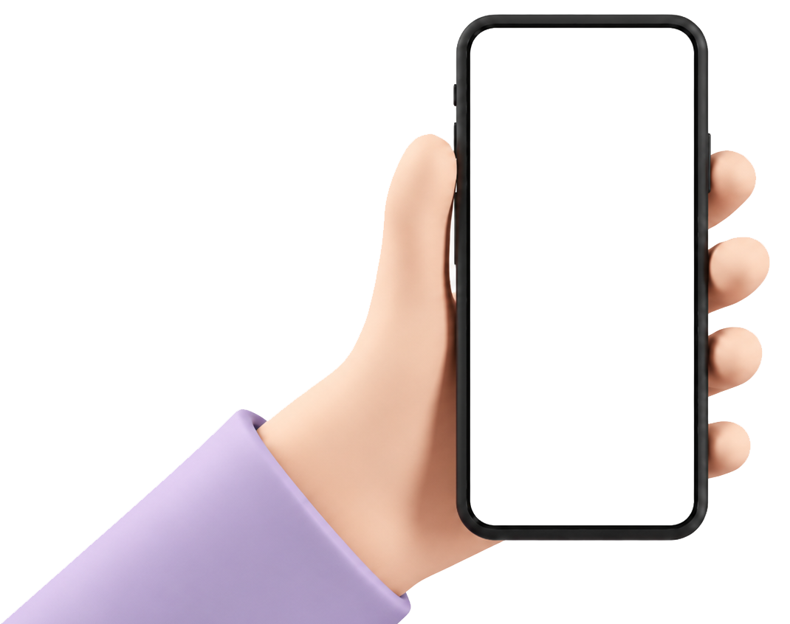
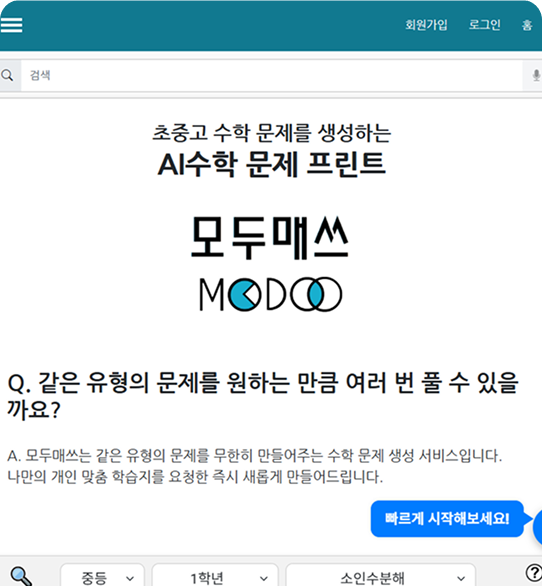

P1
메인에 모든 기능을 한 번에 노출
무엇부터 할지 몰라 이탈 가능성↑, 탐색이 길어 피로도↑.


기획서 분석 단계에서 사용자 이탈을 유발하는 4가지 핵심 문제를 정의했습니다. (출처: 모두매쓰 UX 개선 계획서 — 박효은·장수빈·유진, 2026.04.06)
무엇부터 할지 몰라 이탈 가능성↑, 탐색이 길어 피로도↑.
프린트/바로풀기 모드를 바꿔도 메인 화면이 그대로라 사용법이 혼란스럽다.
"바로풀기"가 서로 다른 페이지로 가는데 같은 이름, "선택" 버튼이 풀이 중에도 남아 시선이 분산된다.
계산기·낙서 기능에 가려지고, 작은 햄버거 바를 눌러야 정답 입력란이 보인다.

기존 메인 화면
"메인에서 서비스 정체성을 알 수 있도록, 핵심 기능에 충실한 사이트로."
— 개선 방향한눈에 들어오는 레이아웃·카피·CTA로 혼란스러운 메인을 정리한다.
해결: 무엇부터 할지 모름 · P1·P2핵심 과업까지의 동선을 짧게 재설계해 긴 사용 과정을 단축한다.
해결: 긴 사용 과정 · P3기능 없는 버튼은 지우고 핵심 버튼의 가독성을 높인다.
해결: 핵심 기능 불명확 · P3·P4사용자는 기능 목록보다 "지금 무엇을 해야 하는가"를 먼저 찾는다. 메인은 기능 나열이 아니라 한 가지 길을 제시해야 한다.
좋은 화면은 기능을 나열하지 않고 핵심 행동(Core Action) 하나를 가장 먼저 보여준다.
학습 서비스의 완주는 결국 신뢰의 흐름(Trust-flow)에서 시작된다.
복잡한 전체 여정을 단순한 선형 흐름으로 재정의했습니다.
보조 내비게이션: 내 자료 · 프로필 · Q&A
네 가지 문제를 메인·전체 흐름·핵심 인터랙션 세 갈래로 나눠 화면으로 증명했습니다.
기능 나열형 메인 → 한 줄의 핵심 메시지("AI로 만드는 맞춤 수학 학습")와 단일 CTA("지금 시작하기")로 정리. (P1·P2 해결)

기존 — 정보 과잉의 긴 스크롤

리뉴얼 — 목적별 섹션 정돈
정보 과잉의 긴 단일 스크롤 → 목적별 섹션으로 정돈된 흐름, 스크롤 피로 감소. (프레임 위에 마우스를 올리면 자동 스크롤이 멈춥니다)
중복 버튼 제거 · 정답 입력 동선을 표면으로. (P3·P4 해결)
틀린 문제를 모아 AI 해설지와 정답/오답 개수로 복습 흐름을 잇는다.
복습 · 전환최근 생성 이력과 이용권을 한곳에서 관리해 재방문 동선("이어서 하기")을 만든다.
재방문회원 등급·업그레이드와 계정·학습 설정으로 개인화·전환 기반을 마련한다.
개인화 Figma
Figma
 VS Code
GitHub
HTMLHTML
CSSCSS
JSJavaScript
VS Code
GitHub
HTMLHTML
CSSCSS
JSJavaScript
 Claude Code
Claude Code
 Firebase
Firebase
문제 정의 · 목표 수립
Figma 시스템 · 화면 설계
HTML · CSS · JS 100%
GitHub Pages 릴리즈
정량 수치 대신, 개선이 향하는 방향을 정의했습니다.
명확한 메인·CTA가 첫 가입 장벽을 낮춘다.
PRIMARY · EXPECTED최단 경로 여정으로 이탈 구간을 줄인다.
PRIMARY · EXPECTED마이페이지·오답노트가 돌아올 이유를 만든다.
EXPECTED프린트 동선을 표면화한다.
EXPECTEDAI 해설 가치로 전환을 유도한다.
CONVERSION · EXPECTED수치는 검증 전 기대 방향입니다.
"더하는 것보다 무엇을 덜어낼지 정하는 일이 더 어렵고, 더 중요했다."
좋은 UX는 기능을 나열하는 게 아니라, 사용자가 목표에 가장 빨리 닿도록 돕는 것이었습니다. 모두매쓰의 메인은 모든 걸 보여주려다 아무것도 안내하지 못하고 있었습니다.
이번 리뉴얼에서 가장 큰 결정은 '추가'가 아니라 '제거'였습니다 — 중복 버튼을 지우고, 핵심 행동 하나를 가장 앞에 두는 것. 사용자를 위한 디자인은 결국 선택과 절제의 문제임을 배웠습니다.